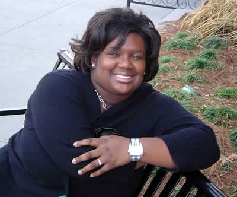

TcKoy is an amazing woman, and I truly miss the time I was able to spend with her on a daily basis back in high school. Though I don't have the opportunity to talk to her very often, I do take every opportunity to soak up any "Tee Time." When Missy and I were chillin' out in the Big Easy back during Spring Break 2003, we took some time out to see Tee at her school. It was alot of fun getting the chance to see her campus and meet some of her friends.
Special Tee memories: Spending our mornings Senior year in front of the Senior building talking, fighting narrow-minded bigots in our Global Affairs class, being there to clap when I got my Model UN award to show those IDIOTS that I'm worth something! Also, cruisin'
the adult book section in Borders and looking at all the adorable gay men, our late night chats when I was a little ol' Freshman in Russell Hall (like the time I got back from going out and the fire alarm went off...that was something!)
I LOVE Tee forever, and will always be there for her, whenever she needs help with any emergency and she needs a little Nick logic.

| TcKoy is amazing. I mean, who wouldn't fall in love with this beautiful woman?? I mean, come on, if I wasn't gay, you know I'd be down just about every weekend in the Big Easy...ahhhh |

OH! I know Tee likes this song, so this is
for YOU babe...
The World Is Not Enough
I know how to hurt
I know how to heal
I know what to show
And what to conceal
I know when to talk
And I know when to touch
No one ever died from wanting too much
The world is not enough
But it is such a perfect place to start, my love
And if you're strong enough
Together we can take the world apart, my love
People like us
Know how to survive
There's no point in living
If you can't feel alive
We know when to kiss
And we know when to kill
If we can't have it all
Then nobody will
The world is not enough
But it is such a perfect place to start, my love
And if you're strong enough
Together we can take the world apart, my love
I...I feel safe
I...I feel scared
I...I feel ready
And yet unprepared
The world is not enough
But it is such a perfect place to start, my love
And if you're strong enough
Together we can take the world apart, my love
The world is not enough
The world is not enough
No, nowhere near enough
The world is not enough